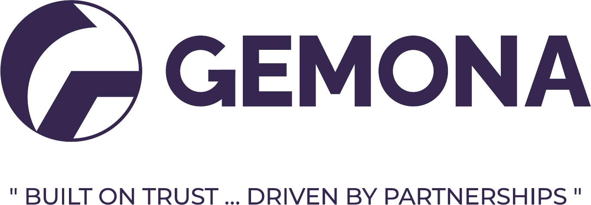
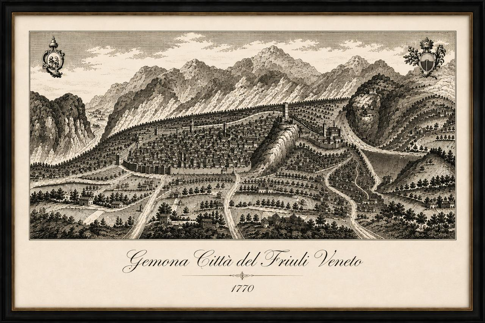
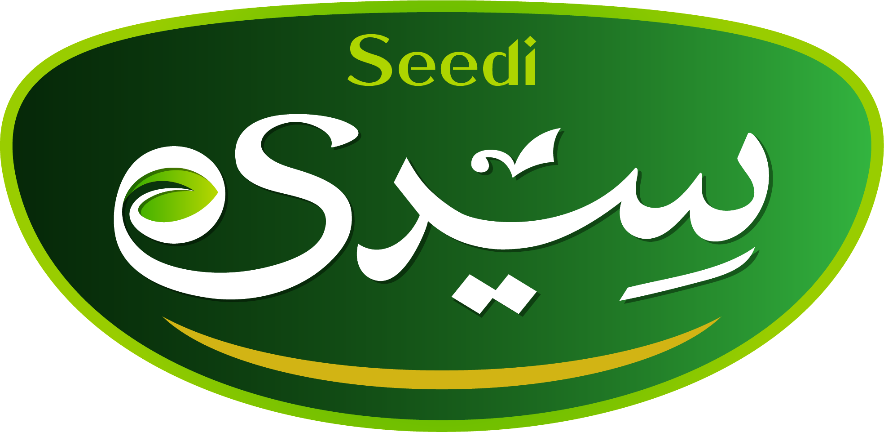
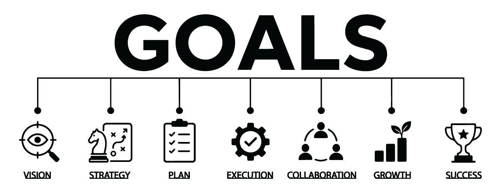
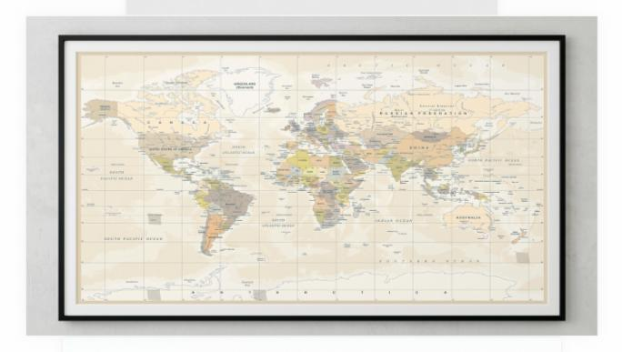

Gateway Position
Historic routes converged at Gemona before expanding into the plains and ports.


Egyptian agri commodities, FMCG, and strategic trade
Built on trust, driven by partnerships. An Egyptian joint stock company connecting resilient supply, disciplined distribution, and long-term institutional confidence.
Incorporated in Egypt in 2022
Gemona Trading & Investments S.A.E. was established to become a trusted Egyptian exporter, importer, and distributor across agri commodities and FMCG. The group combines international trading relationships, value-add processing knowledge, marketplace reach, and local distribution capability to serve institutions, distributors, and consumer channels.
The name behind the group
Gemona takes its name from Gemona del Friuli, the historic Italian town positioned where Alpine routes opened into the Italian plains. For centuries, its geography made it a gateway between Central Europe, Venice, and the Adriatic.
The town's story mirrors the standards we want associated with our group: resilient build, disciplined logistics, commercial relevance, and the ability to connect markets even when conditions change.
Historic routes converged at Gemona before expanding into the plains and ports.
Its role in freight, customs, and exchange made it a practical commercial crossroads.
The town's post-earthquake reconstruction became a symbol of strength under pressure.
What we do
Import, export, and distribution of essential agri commodities with a portfolio centered on sugar, wheat, rice, oils, coffee, nuts, pulses, and related FMCG categories.
Expanding presence across Egypt through direct distribution, digital marketplaces, fulfillment centers, and institutional procurement relationships.
Building product consistency, packaging capability, and quality control around selected imported and locally sourced commodities.
Pursuing adjacent opportunities in construction materials while keeping the group anchored in supply, trade, and market access.
Core portfolio

Our local brand
Seedi is Gemona's local brand for selected agri commodities and FMCG products. It is built around nature's bounty, controlled sourcing, and dependable everyday quality across categories such as rice, sugar, pulses, spices, oils, coffee, pasta, flour, nuts, and tahina.

How we grow
Building channel access through recognized marketplaces and fulfillment centers.
Developing sustainable export opportunities that strengthen import activities.
Launching selected branded portfolios to secure quality and customer confidence.
Welcome letter
Welcome to Gemona Group. We founded Gemona with a clear belief: essential goods deserve dependable systems, transparent partnerships, and the discipline to keep serving markets through changing cycles.
Our name carries the spirit of Gemona del Friuli, a town shaped by trade routes and remembered for resilience. That inspiration guides how we build: carefully, credibly, and with partners who value long-term strength over short-term movement.
As we expand across Egypt and develop international opportunities, we remain committed to quality, governance, and partnerships worthy of the institutions, banks, private equities, distributors, and customers who place their confidence in us.
Hany William
Chief Executive Officer
Global perspective
Gemona's model is built to connect international supply with Egyptian demand, while creating export opportunities that support the group's import and distribution activities.

Partner with Gemona
Gemona Group welcomes institutional conversations around trade finance, supply partnerships, distribution growth, export development, and selected diversification opportunities.
info@gemonagroup.com